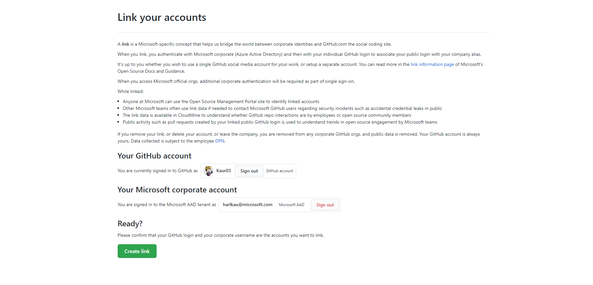
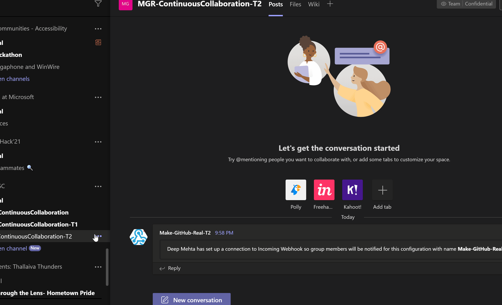
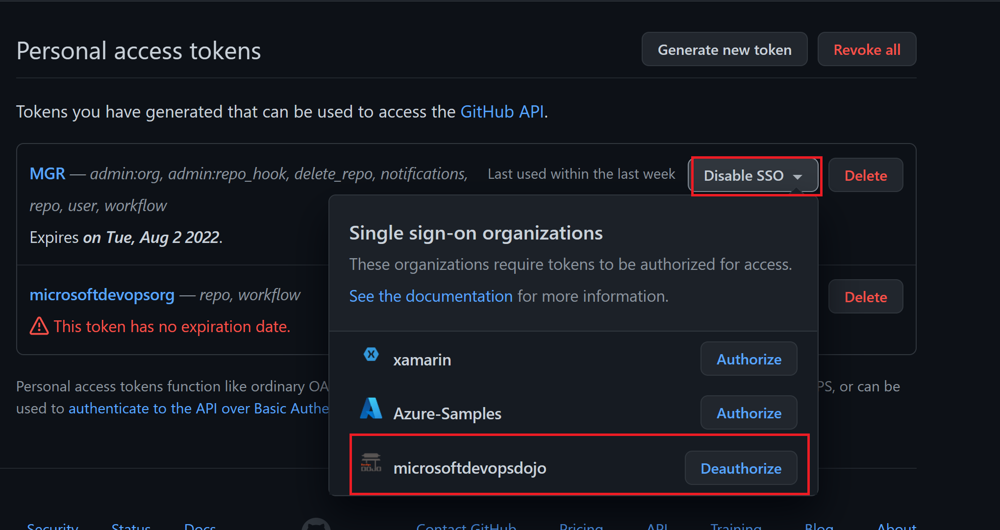
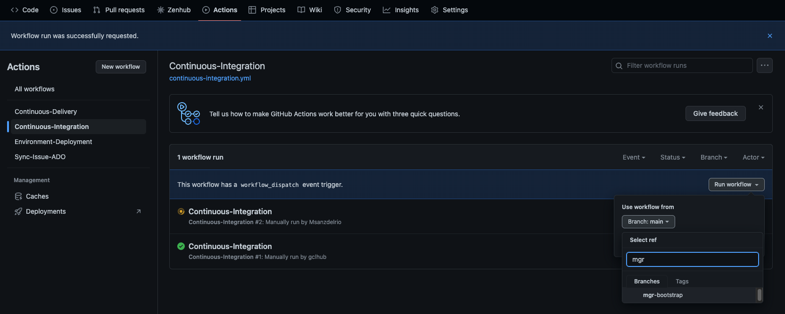

Getting Started
Welcome to Make GitHub Real
This lab aims to demonstrate how to apply DevOps in an environment based on GitHub technology. In the following exercises we will be dealing with different capabilities such as Continuous Planning, Continuous Integration and Continuous Delivery, among others, making use of features available by GitHub, all of this following this reference architecture.
This guide will walk you through the steps you need to take to provision an environment for use with the Make GitHub Real labs.
Before you follow this guide, you will need to be aware of the following prerequisites.
- GitHub account, you can create a GitHub account for free, if you don't already have one.
- Microsoft Team, we will integrate with Microsoft Teams to push messages into channels based on events in GitHub, therefore we recommend that you create a new Microsoft Team for use with this class.
- Azure DevOps organization, although the labs are primarily aimed at using GitHub, this class also uses Azure Boards & Azure Pipelines integration. You can create an Azure DevOps organization for free.
- Azure Subscription, resources will be provisioned in Azure by GitHub Actions to demonstrate Continous Deployment, therefore an active Azure subscription that you permissions to create resources in is required. You can create an Azure account for free.
- Azure CLI, to provision resources in your Azure subscription, a service principal is required to authenticate. We will use the Azure CLI to create this principal. See the How to install Azure CLI guide.
## Configure prerequisites
In this section, we will ensure that you have the prerequisites configured correctly to ensure that when your request an environment using the DevOps Dojo Self Service Power App, it provisions successfully.
Create a GitHub account
In case you don't have a GitHub account yet, please follow this link and create one. You can create it under your employee email or your personal email. If you choose to create it with your personal email, please follow the next section to learn how to link your GitHub account to your corporate identity. If you are already using your corporate account go directly to Join Microsoft DevOps Dojo organization.
Note
If you are not familiar to GitHub yet, we encourage you to follow the Introduction to GitHub GitHub Lab.
Link your GitHub account to your corporate identity
You will first need to ensure that you have linked your GitHub account to your corporate Microsoft identity which will grant you the ability to join any GitHub corporate organization.

Join Microsoft DevOps Dojo organization
Once you have successfully linked your GitHub account to your corporate identity you will then need to request to join the Microsoft DevOps Dojo organization. If you face any issues in this step, please reach Contact Us mentioning your GitHub username.
### Configure Incoming Webhook in Microsoft Teams
To receive messages from GitHub into Microsoft Teams, we will need to create an Incoming Webhook in a channel in your team.
Once you have configured the Incoming Webhook, make a note of the webhook URL, you will need to provide this when you make your request in the DevOps Dojo Self Service Power App.
Note
We recommend creating the webhook in the General channel, however if you want to create another channel to receive messages into, that is also fine. In case you are creating environment for the masterclass, then create a webhook in Bookings/ Coupons team channel

Generate Azure DevOps personal access token
To ensure that we can provision resources in your Azure DevOps organization on your behalf, we will need to authenticate, and for that we will need a Personal Access Token (PAT).
Generate a PAT in your Azure DevOps organization, with the following scopes.
| Scope | Permission |
|---|---|
| Work Items | Read, Write & Manage |
| Project and Team | Read, Write & Manage |
Note
The Project and Team scope is hidden by default, click Show all scopes to expand the list of available scopes
When you're done, make sure to copy the token. For your security, it won't be shown again. You will need to provide this when you make your request in the DevOps Dojo Self Service Power App.
Generate GitHub personal access token
To ensure that we can provision resources in GitHub on your behalf, we will need to authenticate, and for that we will need a Personal Access Token (PAT). Personal access tokens are intended to access GitHub resources on behalf of yourself. In GitHub, there are two types of personal access tokens. You can read more about them here. For this exercise, we will generate a classic PAT.
Note
You can read more about how to keep your personal access tokens secure following this link.
Generate a PAT in GitHub, with the following scopes.
| Scope | Permission |
|---|---|
| repo | Full control of private repositories |
| workflow | Update GitHub Action workflows |
| admin:repo_hook | Full control of repository hooks |
| notifications | Access notifications |
When you're done, make sure to copy the token. For your security, it won't be shown again. You will need to provide this when you make your request in the DevOps Dojo Self Service Power App.
In addition to generating the token, we also need to authorize it for use with SAML single sign on (SSO) to successfully provision resources in the Microsoft DevOps Dojo organisation.

Generate Azure service principal
To ensure that we can provision resources in Azure, we will need to authenticate, and for that we will need to generate a service principal and grant it Contributor access to your Azure subscription.
First sign in with Azure CLI executing the az login command, this will start an interactive login session opening your default web browser.
To create the service principal, execute:
az ad sp create-for-rbac --name "mgr-labs-<<username>>" --role "Contributor" --output "json" --scopes /subscriptions/<subscriptionId>
Note
The service principal will be granted contributor role against the default subscription, use --scopes="/subscriptions/<SUBSCRIPTION_ID>" to specify a specific subscription
The below output will be returned when the service principal has been created.
{
"appId": "<client_id>",
"displayName": "mgr-labs",
"name": "http://mgr-labs",
"password": "<client_secret>",
"tenant": "<tenant_id>"
}
To obtain the Object ID of the service principal, execute:
az ad sp list --display-name "mgr-labs" --query "[].id" --output tsv
When you're done, make sure to copy both of the outputs, you will need to provide this when you make your request in the DevOps Dojo Self Service Power App.
Request your environment
Now that you have all the required prerequisites configured, you can now request your environment using the DevOps Dojo Self Service Power App.
Note
For any of the workflows and environments, if the run fails, try re-running it again for that specific environment. In case the workflow fails at UI Tests, don't worry about it, this happens because the application takes some time to be up and running.
Note
The secrets collected during the provisioning process, are safely stored and processed using Azure KeyVault, and are maintained only until the provisioning. On completion, your secrets are deleted and are no longer maintained by us.
Once the repository has been successfully created and you have received your confirmation email, please follow these steps to create the initial infrasutrcture in Azure:
Go to
Actions -> Continuous Integration -> Run workflow -> mgr-bootstrap
Once the workflow successfully finishes, follow the same steps with the
Continuous Deliveryworkflow.
Note
The repositories created in the Microsoft DevOps Dojo GitHub organization will automatically expire after fifteen days, this should be an appropriate amount of time to complete the labs, however if you require longer, you can request a seven day extension. Once the expiry date has been reached the GitHub repositories will be automatically deleted.
Congratulations, you have successfully provisioned your environment and you can now begin working on the labs. Enjoy! 🎉